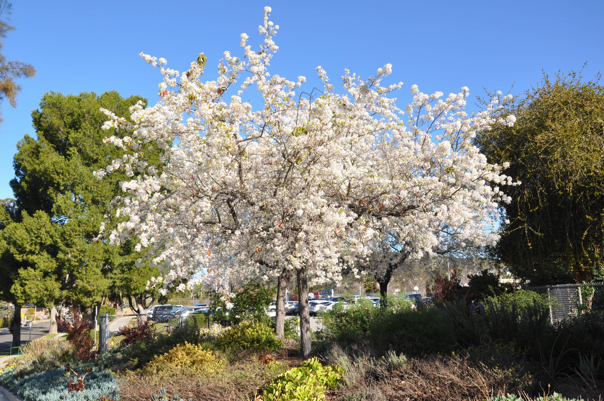
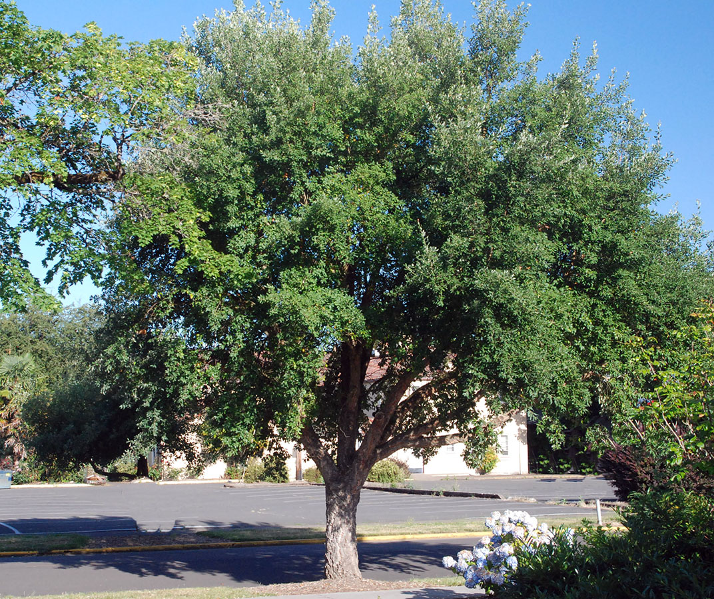
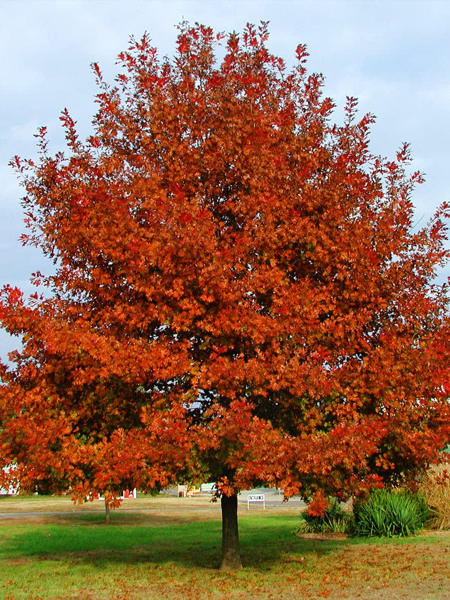
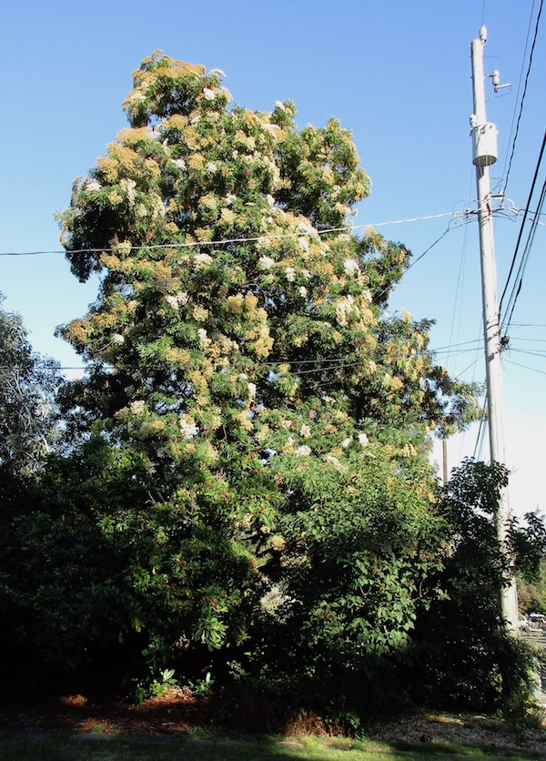
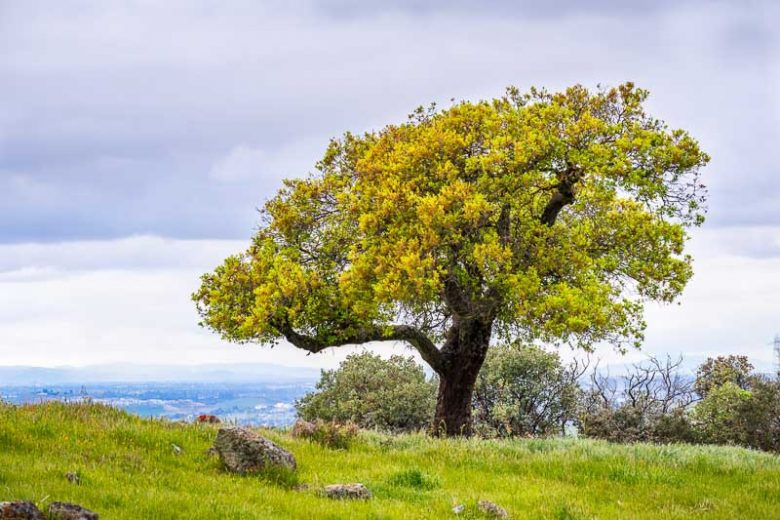
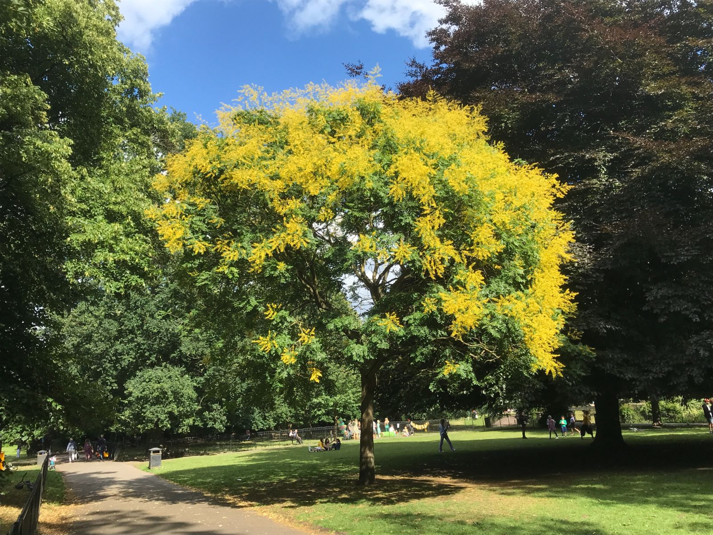
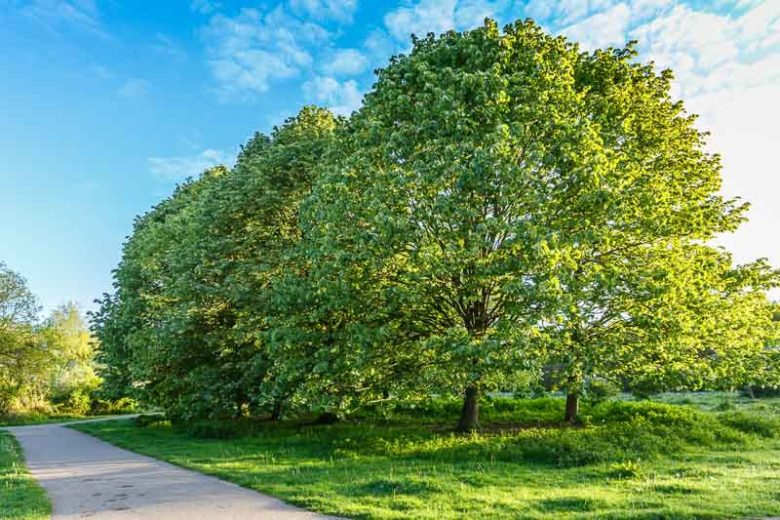
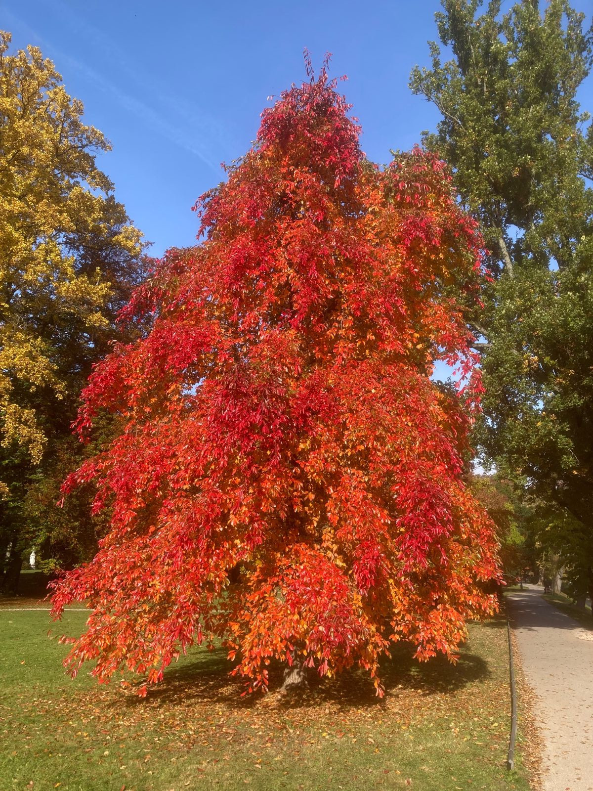
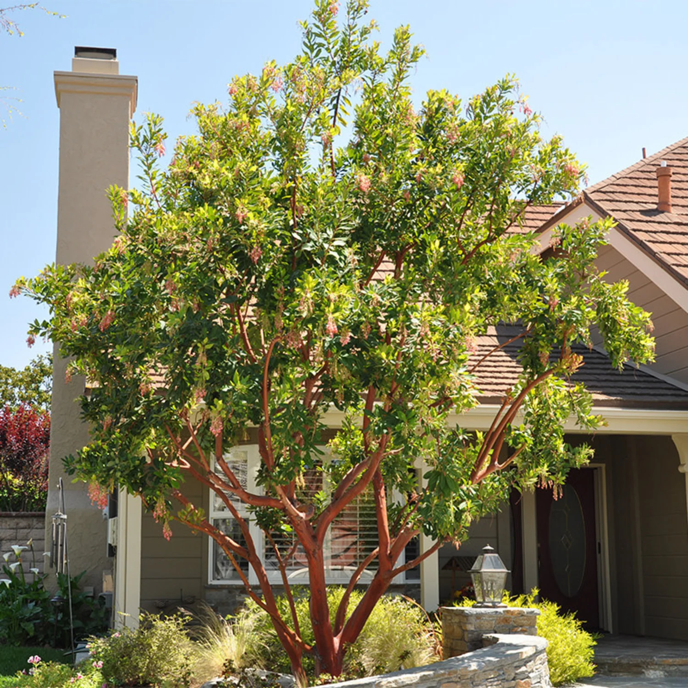
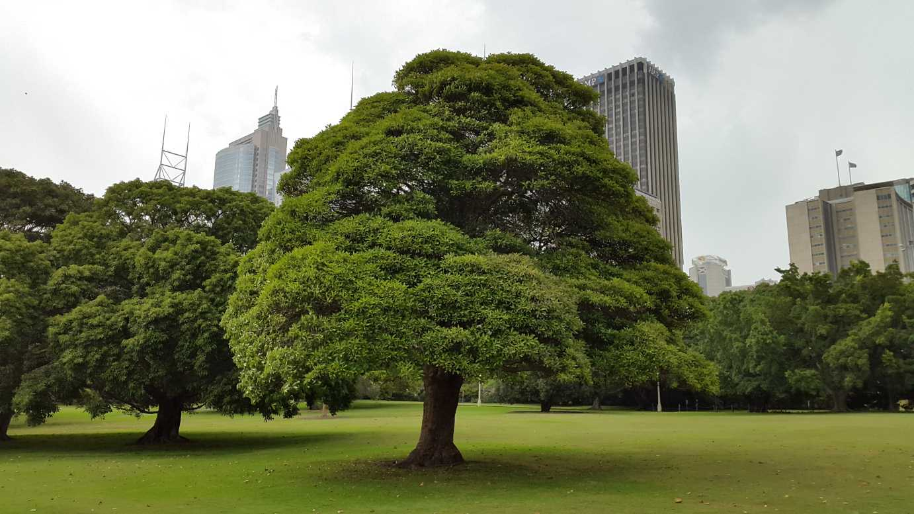

Current Koppen Climate Zone: Csb
Warm summer mediterranean: warm (not hot), dry summers, never above 72°F, cool ocean currents, upwelling, higher latitudes → cool.
Projected Koppen Climate Zone in 2100: Csb
Warm summer mediterranean: warm (not hot), dry summers, never above 72°F, cool ocean currents, upwelling, higher latitudes → cool.
2023 Population: 749,256.
Average SUHI daytime: 0.75°C
Average SUHI nighttime: 0.19°C
Climate in 2100 Similar to current Oakland
Urban Trees Common in Oakland/Csb

Pyrus kawakamii (Evergreen pear)

Quercus suber (Cork oak)

Quercus shumardii (Shumard oak)

Lyonothamnus floribundus asplenifolius (Catalina ironwood)

Quercus agrifolia (Coast live oak)

Koelreuteria paniculata (Golden rain tree)

Tilia tomentosa (Silver linden)

Nyssa sylvatica (Black gum)

Arbutus 'Marina' (Marina strawberry tree)

Lophostemon confertus (Brisbane box)